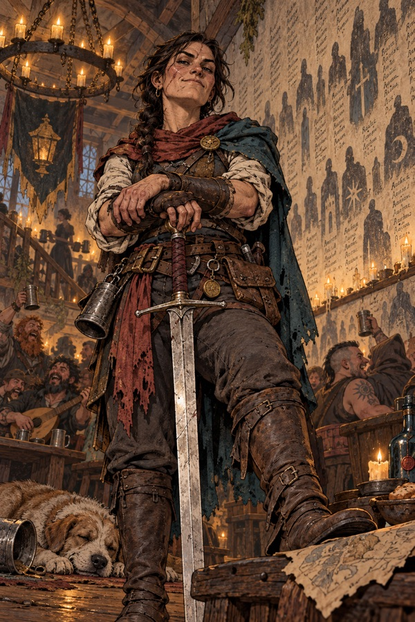
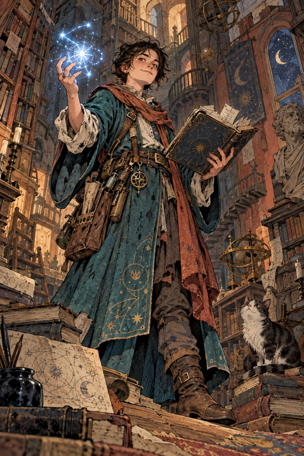
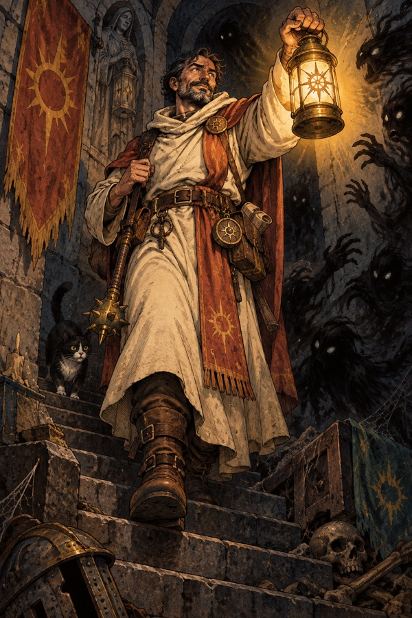
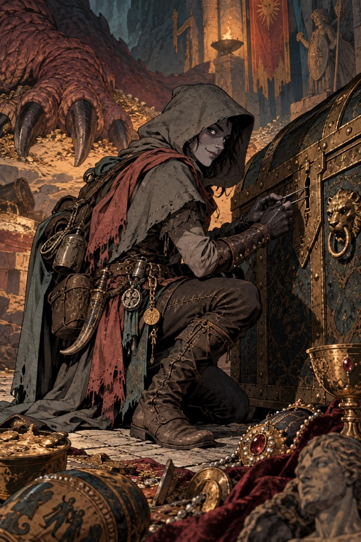
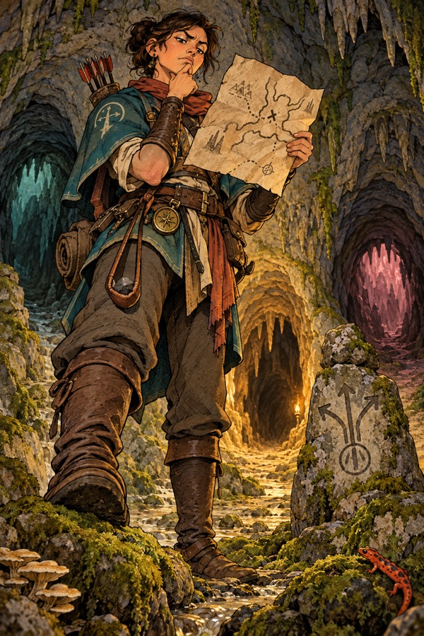
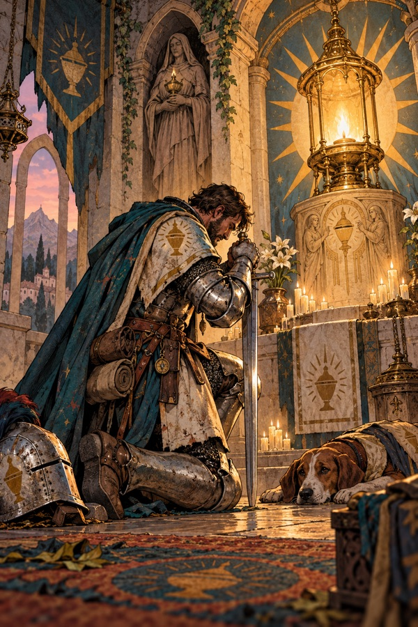

The six callings
Draft. The game's six classes are "callings", and each has an order, guild or tradition behind it in Lanternhollow. The ten titles each calling has in the game are the ranks of that order.
Sellsword: the Free Companies

Order: the Free Companies of the Hollow, a loose brotherhood of sellswords licensed to delve since the Delving Charter (640 YH). Their hall is a rowdy inn by the Hollow Gate called The Last Lamp.
Sellswords fight for pay and fight better than anyone (the most hit points and the surest blows; no magic at all). Most are soldiers out of work from the Tarrow towns. The companies keep a roll of the fallen painted on the inn's long wall, and a sellsword's rank is counted in names they have outlived.
Ranks: Recruit, Blade, Veteran, Swordhand, Champion, Warden, Hero, Warlord, Lord of Blades, Unbroken. The last, Unbroken, belongs by custom to the one sellsword who comes back up from the Pit of the Gloam.
Arcanist: the Collegium of Sparks

Order: the Collegium of Sparks, founded in Aurenhold around 1700 BH and now a narrow, crooked house in Lanternhollow full of rooms no one uses. It teaches arcane magic, the shaping of starlight (see Cosmology).
Arcanists are frail and learn the most spells (the whole arcane realm by level 40), starting with Spark, the first lesson in the Book of First Sparks. The Collegium is proud, argumentative and badly funded. Many of its "runaway apprentices" end up in the Ring of Stone as monsters, and its expelled masters (Grimsby Coldhand, Skarth) are its great shame.
Ranks: Novice, Scribe, Spark-wright, Conjurer, Spellbinder, Thaumaturge, Magister, Arch-scholar, Stormcaller, Archmage.
Lampwarden: the Order of the Lamp

Order: the Order of the Lamp, founded by Caedra around 2560 BH. It built the Lampway, crowned the Lamp Kings, and has shrunk since the Fall to a single temple in Lanternhollow under Sister Ilvane, which keeps the Eternal Lamp (lit from Caedra's own lantern, they say).
Lampwardens are the Order's delving keepers. They carry the carried flame (holy magic), their light reaches one step further than anyone's (the light bonus), and they learn every prayer, starting with Mend. Their duty is the old one: go down, relight what has gone out, and keep the dark down. The Lamp Psalter is the Order's oldest prayer book; the Rites of the Unbroken Flame were written by Caedra herself, the Order says.
Ranks: Acolyte, Lamp-bearer, Keeper, Watcher, Warden, Beacon, High Keeper, Lightward, Dawnbringer, Lamp of the Deep. The last has been held by only one person: Caedra.
Delver: the Quiet Hand

Order: no one admits to belonging to the Quiet Hand, which is how you know it exists. The Delvers were the original treasure-seekers of the Delving Charter and have always been half-thieves: they go down quietly, take what is valuable and leave what is dangerous asleep.
Delvers let monsters sleep longer, strike a sleeping one twice as hard (the ambush), and pick up a little arcane magic later, from the Collegium's back door. The Mantle of Quiet Steps is their legend (see Magic & artifacts).
Ranks: Footpad, Cutpurse, Sneak, Prowler, Shadow, Infiltrator, Vaultbreaker, Nightblade, Master Delver, Unseen. "Vaultbreaker" is a nod to Ironjaw's vault, which every Delver dreams of breaking.
Wayfinder: the Wardens of Roads

Order: the Wardens of Roads, the old kingdom's road-keepers and messengers, who mapped the lamplighters' roads through the rings. Today they are scouts and guides who chart each new shape of the Lampway and sell the maps (which are useless the next time, because the rings shift, and Wayfinders know it, and sell them anyway).
Wayfinders are the best shots (they start with a sling, iron shot and throwing darts) and learn some arcane magic later, and value most the spells that find the way, such as Phase Step and Chart the Depths. Many are Sylvan or Burrowfolk.
Ranks: Trailhand, Scout, Tracker, Pathfinder, Outrider, Hunter, Far-strider, Deepranger, Wayfinder, Warden of Roads.
Oathknight: the Oath of the Unbroken Flame

Order: the Knights of the Oath, holy warriors who swore, after the Fall, the oath that King Ysmer broke: to keep the dark down at any cost to themselves. They are a small, stern order with a chapter house beside the temple. Many are descendants of the Marrow Guard, which is why so many Marrowkin are Oathknights.
Oathknights fight nearly as well as a Sellsword and learn prayers more slowly (part-time holy casters). Their dream is to win back the Crown of Aurenhold from Duke Ashvane and end the debt the kingdom fell into.
Ranks: Squire, Sworn, Shieldbearer, Knight, Oathkeeper, Knight-Captain, Lord Protector, Banneret, Paragon, Oathbound.